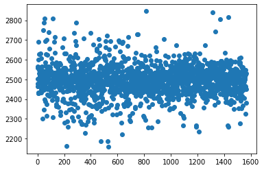
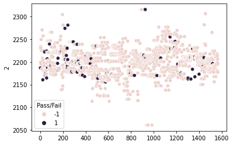
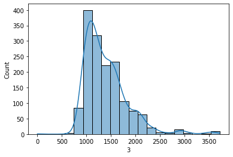
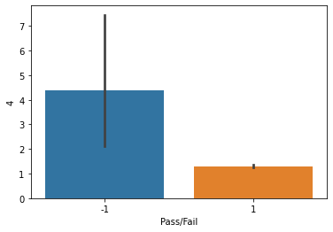
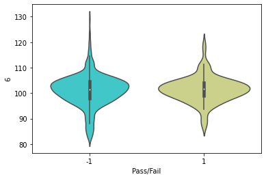
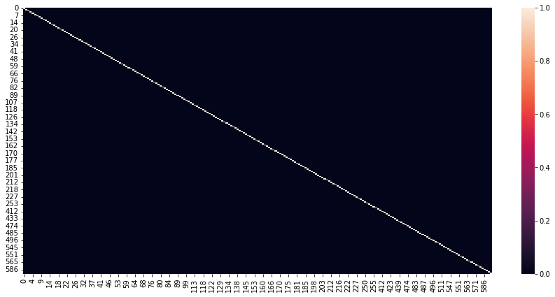
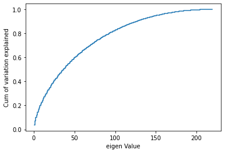

%matplotlib inlineMission Statement
To perform multi-variate analysis, EDA on the signal’s dataset. Also, experiment on various ML Models including Logistic Regression, RandomForest, KNN, etc to compare the pros and cons of each of those and provide insights.
!pip3 install seaborn
!pip3 install imblearn
!pip3 install statsmodels
!pip3 install xgboostCollecting seaborn
Downloading seaborn-0.12.2-py3-none-any.whl (293 kB)
━━━━━━━━━━━━━━━━━━━━━━━━━━━━━━━━━━━━━━━ 293.3/293.3 kB 5.5 MB/s eta 0:00:00a 0:00:01
Requirement already satisfied: matplotlib!=3.6.1,>=3.1 in /root/mambaforge/lib/python3.9/site-packages (from seaborn) (3.5.2)
Requirement already satisfied: numpy!=1.24.0,>=1.17 in /root/mambaforge/lib/python3.9/site-packages (from seaborn) (1.23.0)
Requirement already satisfied: pandas>=0.25 in /root/mambaforge/lib/python3.9/site-packages (from seaborn) (1.4.3)
Requirement already satisfied: packaging>=20.0 in /root/mambaforge/lib/python3.9/site-packages (from matplotlib!=3.6.1,>=3.1->seaborn) (21.3)
Requirement already satisfied: cycler>=0.10 in /root/mambaforge/lib/python3.9/site-packages (from matplotlib!=3.6.1,>=3.1->seaborn) (0.11.0)
Requirement already satisfied: fonttools>=4.22.0 in /root/mambaforge/lib/python3.9/site-packages (from matplotlib!=3.6.1,>=3.1->seaborn) (4.33.3)
Requirement already satisfied: python-dateutil>=2.7 in /root/mambaforge/lib/python3.9/site-packages (from matplotlib!=3.6.1,>=3.1->seaborn) (2.8.2)
Requirement already satisfied: pillow>=6.2.0 in /root/mambaforge/lib/python3.9/site-packages (from matplotlib!=3.6.1,>=3.1->seaborn) (9.1.1)
Requirement already satisfied: kiwisolver>=1.0.1 in /root/mambaforge/lib/python3.9/site-packages (from matplotlib!=3.6.1,>=3.1->seaborn) (1.4.3)
Requirement already satisfied: pyparsing>=2.2.1 in /root/mambaforge/lib/python3.9/site-packages (from matplotlib!=3.6.1,>=3.1->seaborn) (3.0.9)
Requirement already satisfied: pytz>=2020.1 in /root/mambaforge/lib/python3.9/site-packages (from pandas>=0.25->seaborn) (2022.1)
Requirement already satisfied: six>=1.5 in /root/mambaforge/lib/python3.9/site-packages (from python-dateutil>=2.7->matplotlib!=3.6.1,>=3.1->seaborn) (1.16.0)
Installing collected packages: seaborn
Successfully installed seaborn-0.12.2
WARNING: Running pip as the 'root' user can result in broken permissions and conflicting behaviour with the system package manager. It is recommended to use a virtual environment instead: https://pip.pypa.io/warnings/venv
Collecting imblearn
Downloading imblearn-0.0-py2.py3-none-any.whl (1.9 kB)
Collecting imbalanced-learn
Downloading imbalanced_learn-0.10.1-py3-none-any.whl (226 kB)
━━━━━━━━━━━━━━━━━━━━━━━━━━━━━━━━━━━━━━ 226.0/226.0 kB 11.2 MB/s eta 0:00:00
Requirement already satisfied: scipy>=1.3.2 in /root/mambaforge/lib/python3.9/site-packages (from imbalanced-learn->imblearn) (1.8.1)
Requirement already satisfied: scikit-learn>=1.0.2 in /root/mambaforge/lib/python3.9/site-packages (from imbalanced-learn->imblearn) (1.1.1)
Requirement already satisfied: threadpoolctl>=2.0.0 in /root/mambaforge/lib/python3.9/site-packages (from imbalanced-learn->imblearn) (3.1.0)
Collecting joblib>=1.1.1
Downloading joblib-1.2.0-py3-none-any.whl (297 kB)
━━━━━━━━━━━━━━━━━━━━━━━━━━━━━━━━━━━━━━ 298.0/298.0 kB 38.3 MB/s eta 0:00:00
Requirement already satisfied: numpy>=1.17.3 in /root/mambaforge/lib/python3.9/site-packages (from imbalanced-learn->imblearn) (1.23.0)
Installing collected packages: joblib, imbalanced-learn, imblearn
Attempting uninstall: joblib
Found existing installation: joblib 1.1.0
Uninstalling joblib-1.1.0:
Successfully uninstalled joblib-1.1.0
Successfully installed imbalanced-learn-0.10.1 imblearn-0.0 joblib-1.2.0
WARNING: Running pip as the 'root' user can result in broken permissions and conflicting behaviour with the system package manager. It is recommended to use a virtual environment instead: https://pip.pypa.io/warnings/venv
Collecting statsmodels
Downloading statsmodels-0.13.5-cp39-cp39-manylinux_2_17_x86_64.manylinux2014_x86_64.whl (9.9 MB)
━━━━━━━━━━━━━━━━━━━━━━━━━━━━━━━━━━━━━━━━ 9.9/9.9 MB 39.1 MB/s eta 0:00:0000:01:00:01
Requirement already satisfied: scipy>=1.3 in /root/mambaforge/lib/python3.9/site-packages (from statsmodels) (1.8.1)
Requirement already satisfied: packaging>=21.3 in /root/mambaforge/lib/python3.9/site-packages (from statsmodels) (21.3)
Requirement already satisfied: pandas>=0.25 in /root/mambaforge/lib/python3.9/site-packages (from statsmodels) (1.4.3)
Requirement already satisfied: numpy>=1.17 in /root/mambaforge/lib/python3.9/site-packages (from statsmodels) (1.23.0)
Collecting patsy>=0.5.2
Downloading patsy-0.5.3-py2.py3-none-any.whl (233 kB)
━━━━━━━━━━━━━━━━━━━━━━━━━━━━━━━━━━━━━━ 233.8/233.8 kB 28.7 MB/s eta 0:00:00
Requirement already satisfied: pyparsing!=3.0.5,>=2.0.2 in /root/mambaforge/lib/python3.9/site-packages (from packaging>=21.3->statsmodels) (3.0.9)
Requirement already satisfied: pytz>=2020.1 in /root/mambaforge/lib/python3.9/site-packages (from pandas>=0.25->statsmodels) (2022.1)
Requirement already satisfied: python-dateutil>=2.8.1 in /root/mambaforge/lib/python3.9/site-packages (from pandas>=0.25->statsmodels) (2.8.2)
Requirement already satisfied: six in /root/mambaforge/lib/python3.9/site-packages (from patsy>=0.5.2->statsmodels) (1.16.0)
Installing collected packages: patsy, statsmodels
Successfully installed patsy-0.5.3 statsmodels-0.13.5
WARNING: Running pip as the 'root' user can result in broken permissions and conflicting behaviour with the system package manager. It is recommended to use a virtual environment instead: https://pip.pypa.io/warnings/venv
Collecting xgboost
Downloading xgboost-1.7.4-py3-none-manylinux2014_x86_64.whl (193.6 MB)
━━━━━━━━━━━━━━━━━━━━━━━━━━━━━━━━━━━━━━━ 193.6/193.6 MB 4.8 MB/s eta 0:00:0000:0100:01
Requirement already satisfied: numpy in /root/mambaforge/lib/python3.9/site-packages (from xgboost) (1.23.0)
Requirement already satisfied: scipy in /root/mambaforge/lib/python3.9/site-packages (from xgboost) (1.8.1)
Installing collected packages: xgboost
Successfully installed xgboost-1.7.4
WARNING: Running pip as the 'root' user can result in broken permissions and conflicting behaviour with the system package manager. It is recommended to use a virtual environment instead: https://pip.pypa.io/warnings/venv# Importing libraries
import numpy as np
import pandas as pd
import matplotlib.pyplot as plt
import seaborn as sns
from time import time
from scipy.stats import randint as sp_randint
from sklearn import metrics
from sklearn.model_selection import GridSearchCV
from sklearn.model_selection import RandomizedSearchCV
from sklearn.ensemble import RandomForestClassifierQ1. Import and understand the data
A. Import ‘signal-data.csv’ as DataFrame
df_signal = pd.read_csv('signal-data.csv')df_signal.head()| Time | 0 | 1 | 2 | 3 | 4 | 5 | 6 | 7 | 8 | ... | 581 | 582 | 583 | 584 | 585 | 586 | 587 | 588 | 589 | Pass/Fail | |
|---|---|---|---|---|---|---|---|---|---|---|---|---|---|---|---|---|---|---|---|---|---|
| 0 | 2008-07-19 11:55:00 | 3030.93 | 2564.00 | 2187.7333 | 1411.1265 | 1.3602 | 100.0 | 97.6133 | 0.1242 | 1.5005 | ... | NaN | 0.5005 | 0.0118 | 0.0035 | 2.3630 | NaN | NaN | NaN | NaN | -1 |
| 1 | 2008-07-19 12:32:00 | 3095.78 | 2465.14 | 2230.4222 | 1463.6606 | 0.8294 | 100.0 | 102.3433 | 0.1247 | 1.4966 | ... | 208.2045 | 0.5019 | 0.0223 | 0.0055 | 4.4447 | 0.0096 | 0.0201 | 0.0060 | 208.2045 | -1 |
| 2 | 2008-07-19 13:17:00 | 2932.61 | 2559.94 | 2186.4111 | 1698.0172 | 1.5102 | 100.0 | 95.4878 | 0.1241 | 1.4436 | ... | 82.8602 | 0.4958 | 0.0157 | 0.0039 | 3.1745 | 0.0584 | 0.0484 | 0.0148 | 82.8602 | 1 |
| 3 | 2008-07-19 14:43:00 | 2988.72 | 2479.90 | 2199.0333 | 909.7926 | 1.3204 | 100.0 | 104.2367 | 0.1217 | 1.4882 | ... | 73.8432 | 0.4990 | 0.0103 | 0.0025 | 2.0544 | 0.0202 | 0.0149 | 0.0044 | 73.8432 | -1 |
| 4 | 2008-07-19 15:22:00 | 3032.24 | 2502.87 | 2233.3667 | 1326.5200 | 1.5334 | 100.0 | 100.3967 | 0.1235 | 1.5031 | ... | NaN | 0.4800 | 0.4766 | 0.1045 | 99.3032 | 0.0202 | 0.0149 | 0.0044 | 73.8432 | -1 |
5 rows × 592 columns
df_signal.shape(1567, 592)Q2. Data cleansing
A. Write a for loop which will remove all the features with 20%+ Null values and impute rest with mean of the feature
df_signal.isna().sum()Time 0
0 6
1 7
2 14
3 14
..
586 1
587 1
588 1
589 1
Pass/Fail 0
Length: 592, dtype: int64for col in df_signal.iloc[:,1:-1].columns:
if df_signal[col].isnull().sum()*100/len(df_signal[col]) < 20:
df_signal[col].fillna(df_signal[col].mean(), inplace=True)
else:
df_signal.drop(col, axis=1,inplace=True)df_signal.isnull().sum().sort_values(ascending=False)Time 0
398 0
392 0
393 0
394 0
..
188 0
187 0
186 0
185 0
Pass/Fail 0
Length: 560, dtype: int64- Hence, 32 columns have been dropped, because they had more than 20% of the data as null values.
- Remaining columns, the mean values have been imputed with mean.
B. Identify and drop the features which are having same value for all the rows
# For feature to have same value for all rows. There are several ways to fetch those.
# The easiest way is to check if the feature's min and max value is same, that means all the
# values in that feature are same.
for col in df_signal.columns:
if df_signal[col].min()==df_signal[col].max():
df_signal.drop(col, axis=1, inplace=True)df_signal.shape(1567, 444)- Hence, 116 columns have been removed as they had same values for all the rows
C. Drop other features if required using relevant functional knowledge. Clearly justify the same
df_signal[df_signal.duplicated()]| Time | 0 | 1 | 2 | 3 | 4 | 6 | 7 | 8 | 9 | ... | 577 | 582 | 583 | 584 | 585 | 586 | 587 | 588 | 589 | Pass/Fail |
|---|
0 rows × 444 columns
- Hence, there are no duplicate rows
for col in df_signal.columns[1:]:
if round(df_signal[col].std(),2)==0:
df_signal.drop(col, axis=1, inplace=True)
else:
passdf_signal.shape(1567, 410)D. Check for multi-collinearity in the data and take necessary action
threshold = 0.85
corr_matrix = df_signal.corr().abs()
upper = corr_matrix.where(np.triu(np.ones(corr_matrix.shape), k=1).astype(bool))
high_correlation = [column for column in upper.columns if any(upper[column] > threshold)]
df_signal.drop(high_correlation, axis=1, inplace = True)df_signal.shape(1567, 221)Q3. Data analysis & visualisation
A. Perform a detailed univariate Analysis with appropriate detailed comments after each analysis
df_signal.head()| Time | 0 | 1 | 2 | 3 | 4 | 6 | 7 | 8 | 9 | ... | 565 | 570 | 571 | 572 | 573 | 583 | 586 | 587 | 589 | Pass/Fail | |
|---|---|---|---|---|---|---|---|---|---|---|---|---|---|---|---|---|---|---|---|---|---|
| 0 | 2008-07-19 11:55:00 | 3030.93 | 2564.00 | 2187.7333 | 1411.1265 | 1.3602 | 97.6133 | 0.1242 | 1.5005 | 0.0162 | ... | 0.14561 | 533.8500 | 2.1113 | 8.95 | 0.3157 | 0.0118 | 0.021458 | 0.016475 | 99.670066 | -1 |
| 1 | 2008-07-19 12:32:00 | 3095.78 | 2465.14 | 2230.4222 | 1463.6606 | 0.8294 | 102.3433 | 0.1247 | 1.4966 | -0.0005 | ... | 0.14561 | 535.0164 | 2.4335 | 5.92 | 0.2653 | 0.0223 | 0.009600 | 0.020100 | 208.204500 | -1 |
| 2 | 2008-07-19 13:17:00 | 2932.61 | 2559.94 | 2186.4111 | 1698.0172 | 1.5102 | 95.4878 | 0.1241 | 1.4436 | 0.0041 | ... | 0.62190 | 535.0245 | 2.0293 | 11.21 | 0.1882 | 0.0157 | 0.058400 | 0.048400 | 82.860200 | 1 |
| 3 | 2008-07-19 14:43:00 | 2988.72 | 2479.90 | 2199.0333 | 909.7926 | 1.3204 | 104.2367 | 0.1217 | 1.4882 | -0.0124 | ... | 0.16300 | 530.5682 | 2.0253 | 9.33 | 0.1738 | 0.0103 | 0.020200 | 0.014900 | 73.843200 | -1 |
| 4 | 2008-07-19 15:22:00 | 3032.24 | 2502.87 | 2233.3667 | 1326.5200 | 1.5334 | 100.3967 | 0.1235 | 1.5031 | -0.0031 | ... | 0.14561 | 532.0155 | 2.0275 | 8.83 | 0.2224 | 0.4766 | 0.020200 | 0.014900 | 73.843200 | -1 |
5 rows × 221 columns
# Univariate Boxplot for column 0
print(df_signal.boxplot(column=['0'], return_type='axes'))AxesSubplot(0.125,0.125;0.775x0.755)
Observations: The above boxplot for column 0 shows the median at around ~3000 value, and there are multiple values that lie outside the Q1 and Q3 range. The maximum value is near ~3350, while the minimum value is less than ~2750.
# Univariate Scatterplot for column 1
plt.scatter(df_signal.index,df_signal['1'])
plt.show()
Observations: The above scatterplot for column 1 shows that there is no strong are where most of the datapoints are scattered. The distribution is failrly uniformly distributed from beginning to end.
# Univariate Scatterplot for column 2
sns.scatterplot(x=df_signal.index,y=df_signal['2'], hue=df_signal['Pass/Fail'])
plt.show()
Observations: The above scatterplot for column 2 shows that there is no strong are where most of the datapoints are scattered. The distribution is failrly uniformly distributed from beginning to end. However, most of the datapoints for “Fail” are scattered more to the right and left of the plot, whereas “Pass” is present throughout the distribution with more towards centre of the data
# Univariate Histogram for column 3
sns.histplot(df_signal['3'],bins=20,kde=True)
plt.show()
Observations: The above histogram shows that 1000-1500 has the most frequency distributed, with almost negligible datapoints less than 1000. The graph is mostlly uniform distributed with a little rightly skewed.
B. Perform bivariate and multivariate analysis with appropriate detailed comments after each analysis
# Barplot for Columns 4 Vs Pass/Fail
sns.barplot(x=df_signal['Pass/Fail'],y=df_signal['4'])
plt.show()
Observations: The barplot for Column 4 Vs target feature, shows that there is more number of Pass, in comparison to Fail feature.
# ViolinPlot for Columns 6 Vs Pass/Fail
sns.violinplot(x=df_signal['Pass/Fail'],y=df_signal['6'],palette='rainbow')
plt.show()
Observations: The barplot for Column 6 Vs target feature, shows almost similar distribution. However, the edges of Pass is more scattered, whereas the Fail feature has most of the data within 90 to 110, with less scattering. There is negligible data for Fail feature after 120 value for Column 6
# Heatmap for columns corr > 0.98
corr=df_signal.corr()
plt.figure(figsize=(15,7))
sns.heatmap(corr>=0.98)
plt.show()
Observations: The heatmap shows columns for which correlation coefficient is 0.98. Hence, the remaining columns are not a part of the heatmap. Regardless, we see that almost whole of the heatmap is close to black color, which shows that there is very minimal absolute correlation, and the most columns are independent of each other.
Q4
A. Segregate predictors vs target attributes
X = df_signal.drop(['Time','Pass/Fail'], axis=1) # Predictors
y = df_signal[['Pass/Fail']] # Target VariableX.head()| 0 | 1 | 2 | 3 | 4 | 6 | 7 | 8 | 9 | 10 | ... | 564 | 565 | 570 | 571 | 572 | 573 | 583 | 586 | 587 | 589 | |
|---|---|---|---|---|---|---|---|---|---|---|---|---|---|---|---|---|---|---|---|---|---|
| 0 | 3030.93 | 2564.00 | 2187.7333 | 1411.1265 | 1.3602 | 97.6133 | 0.1242 | 1.5005 | 0.0162 | -0.0034 | ... | 6.444985 | 0.14561 | 533.8500 | 2.1113 | 8.95 | 0.3157 | 0.0118 | 0.021458 | 0.016475 | 99.670066 |
| 1 | 3095.78 | 2465.14 | 2230.4222 | 1463.6606 | 0.8294 | 102.3433 | 0.1247 | 1.4966 | -0.0005 | -0.0148 | ... | 6.444985 | 0.14561 | 535.0164 | 2.4335 | 5.92 | 0.2653 | 0.0223 | 0.009600 | 0.020100 | 208.204500 |
| 2 | 2932.61 | 2559.94 | 2186.4111 | 1698.0172 | 1.5102 | 95.4878 | 0.1241 | 1.4436 | 0.0041 | 0.0013 | ... | 1.100000 | 0.62190 | 535.0245 | 2.0293 | 11.21 | 0.1882 | 0.0157 | 0.058400 | 0.048400 | 82.860200 |
| 3 | 2988.72 | 2479.90 | 2199.0333 | 909.7926 | 1.3204 | 104.2367 | 0.1217 | 1.4882 | -0.0124 | -0.0033 | ... | 7.320000 | 0.16300 | 530.5682 | 2.0253 | 9.33 | 0.1738 | 0.0103 | 0.020200 | 0.014900 | 73.843200 |
| 4 | 3032.24 | 2502.87 | 2233.3667 | 1326.5200 | 1.5334 | 100.3967 | 0.1235 | 1.5031 | -0.0031 | -0.0072 | ... | 6.444985 | 0.14561 | 532.0155 | 2.0275 | 8.83 | 0.2224 | 0.4766 | 0.020200 | 0.014900 | 73.843200 |
5 rows × 219 columns
y.head()| Pass/Fail | |
|---|---|
| 0 | -1 |
| 1 | -1 |
| 2 | 1 |
| 3 | -1 |
| 4 | -1 |
B. Check for target balancing and fix it if found imbalanced
print(y.value_counts())Pass/Fail
-1 1463
1 104
dtype: int64from imblearn.over_sampling import SMOTE
oversample=SMOTE()
X,Y=oversample.fit_resample(X,y)
Y.value_counts()Pass/Fail
-1 1463
1 1463
dtype: int64C. Perform train-test split and standardise the data or vice versa if required
from scipy.stats import zscore
XScaled=X.apply(zscore)
XScaled.head()| 0 | 1 | 2 | 3 | 4 | 6 | 7 | 8 | 9 | 10 | ... | 564 | 565 | 570 | 571 | 572 | 573 | 583 | 586 | 587 | 589 | |
|---|---|---|---|---|---|---|---|---|---|---|---|---|---|---|---|---|---|---|---|---|---|
| 0 | 0.303750 | 0.947651 | -0.465999 | 0.079211 | -0.036271 | -0.675140 | 0.327026 | 0.524000 | 1.344471 | -0.420610 | ... | -0.032018 | -0.099245 | 0.199153 | 0.029293 | -0.207883 | -0.049883 | -0.281063 | -0.022273 | -0.067951 | -0.004427 |
| 1 | 1.192926 | -0.442705 | 1.105731 | 0.220341 | -0.049195 | 0.234284 | 0.402482 | 0.462152 | 0.090688 | -1.734014 | ... | -0.032018 | -0.099245 | 0.254124 | 1.154726 | -0.250978 | -0.307125 | 0.520744 | -1.083597 | 0.375512 | 1.309319 |
| 2 | -1.044342 | 0.890552 | -0.514680 | 0.849929 | -0.032619 | -1.083804 | 0.311935 | -0.378341 | 0.436042 | 0.120881 | ... | -2.463225 | 6.082150 | 0.254506 | -0.257130 | -0.175739 | -0.700643 | 0.016751 | 3.283982 | 3.837489 | -0.207900 |
| 3 | -0.275003 | -0.235122 | -0.049953 | -1.267598 | -0.037240 | 0.598323 | -0.050251 | 0.328942 | -0.802726 | -0.409089 | ... | 0.365990 | 0.126453 | 0.044484 | -0.271102 | -0.202478 | -0.774140 | -0.395606 | -0.134901 | -0.260611 | -0.317046 |
| 4 | 0.321712 | 0.087926 | 1.214142 | -0.148080 | -0.032054 | -0.139983 | 0.221389 | 0.565232 | -0.104512 | -0.858411 | ... | -0.032018 | -0.099245 | 0.112694 | -0.263417 | -0.209589 | -0.526086 | 35.212251 | -0.134901 | -0.260611 | -0.317046 |
5 rows × 219 columns
from sklearn.model_selection import train_test_split
X_train, X_test, y_train, y_test = train_test_split(XScaled, Y, train_size = .80, random_state=0)D. Check if the train and test data have similar statistical characteristics when compared with original data
# 5 point summary of the original data
X.describe().loc[['min','25%','50%','75%','max']]| 0 | 1 | 2 | 3 | 4 | 6 | 7 | 8 | 9 | 10 | ... | 564 | 565 | 570 | 571 | 572 | 573 | 583 | 586 | 587 | 589 | |
|---|---|---|---|---|---|---|---|---|---|---|---|---|---|---|---|---|---|---|---|---|---|
| min | 2743.240000 | 2158.750000 | 2060.660000 | 0.000000 | 0.681500 | 82.131100 | 0.000000 | 1.191000 | -0.053400 | -0.034900 | ... | 0.970000 | 0.022400 | 317.196400 | 0.980200 | 3.540000 | 0.066700 | 0.0060 | -0.016900 | 0.003200 | 0.000000 |
| 25% | 2960.587175 | 2457.536272 | 2182.622200 | 1111.476400 | 1.075174 | 98.712200 | 0.121195 | 1.427517 | -0.009891 | -0.004894 | ... | 4.980000 | 0.095631 | 530.997453 | 1.994300 | 7.710000 | 0.234314 | 0.0118 | 0.014411 | 0.011300 | 48.705907 |
| 50% | 2998.035000 | 2499.770000 | 2198.698308 | 1302.660700 | 1.309595 | 101.362425 | 0.122277 | 1.466131 | -0.001900 | 0.000804 | ... | 6.390000 | 0.145610 | 532.490194 | 2.144062 | 8.865433 | 0.291833 | 0.0141 | 0.020800 | 0.015773 | 75.744454 |
| 75% | 3049.178807 | 2534.478138 | 2215.790906 | 1578.102105 | 1.489000 | 103.884833 | 0.123556 | 1.510726 | 0.005927 | 0.005700 | ... | 7.470579 | 0.178265 | 534.273205 | 2.302658 | 10.095075 | 0.360600 | 0.0168 | 0.027669 | 0.021000 | 121.653250 |
| max | 3356.350000 | 2846.440000 | 2315.266700 | 3715.041700 | 1114.536600 | 129.252200 | 0.128600 | 1.656400 | 0.074900 | 0.053000 | ... | 32.580000 | 0.689200 | 589.508200 | 2.739500 | 454.560000 | 2.196700 | 0.4766 | 0.102800 | 0.079900 | 737.304800 |
5 rows × 219 columns
# summary of the Training data
X_train.describe()| 0 | 1 | 2 | 3 | 4 | 6 | 7 | 8 | 9 | 10 | ... | 564 | 565 | 570 | 571 | 572 | 573 | 583 | 586 | 587 | 589 | |
|---|---|---|---|---|---|---|---|---|---|---|---|---|---|---|---|---|---|---|---|---|---|
| count | 2340.000000 | 2340.000000 | 2340.000000 | 2340.000000 | 2340.000000 | 2340.000000 | 2340.000000 | 2340.000000 | 2340.000000 | 2340.000000 | ... | 2340.000000 | 2340.000000 | 2340.000000 | 2340.000000 | 2340.000000 | 2340.000000 | 2340.000000 | 2340.000000 | 2340.000000 | 2340.000000 |
| mean | 0.000988 | 0.004691 | -0.010001 | -0.010020 | 0.009438 | -0.000620 | -0.012190 | 0.018574 | -0.012164 | -0.012249 | ... | -0.001099 | 0.018057 | -0.010527 | 0.007940 | 0.001426 | -0.001827 | 0.007871 | 0.003421 | 0.006602 | -0.002435 |
| std | 1.011123 | 0.985903 | 0.982061 | 0.981078 | 1.118255 | 0.994716 | 1.109311 | 0.984026 | 0.991069 | 1.009566 | ... | 0.971454 | 1.022435 | 1.055517 | 0.994409 | 0.998569 | 0.965238 | 1.102499 | 1.000731 | 1.001266 | 0.997663 |
| min | -3.640845 | -4.751740 | -5.144613 | -3.711711 | -0.052797 | -3.651859 | -18.416120 | -4.384166 | -3.880876 | -4.049752 | ... | -2.463225 | -1.698283 | -10.011539 | -3.921600 | -0.266339 | -1.320778 | -0.723965 | -3.455335 | -1.691888 | -1.210874 |
| 25% | -0.665911 | -0.532087 | -0.638936 | -0.725855 | -0.043099 | -0.469625 | -0.125707 | -0.618275 | -0.622542 | -0.605475 | ... | -0.698377 | -0.748852 | 0.064877 | -0.379384 | -0.225948 | -0.472691 | -0.281063 | -0.650911 | -0.688771 | -0.617664 |
| 50% | -0.144994 | 0.051289 | -0.062663 | -0.217475 | -0.037328 | 0.043734 | 0.036133 | 0.008097 | -0.025259 | 0.053403 | ... | -0.057028 | -0.099245 | 0.134380 | 0.144470 | -0.209576 | -0.166899 | -0.105717 | -0.058268 | -0.140662 | -0.295600 |
| 75% | 0.544012 | 0.532126 | 0.556730 | 0.512652 | -0.032831 | 0.519003 | 0.226139 | 0.695786 | 0.548657 | 0.608595 | ... | 0.440256 | 0.350976 | 0.220321 | 0.707853 | -0.192522 | 0.180441 | 0.106530 | 0.536345 | 0.485610 | 0.278644 |
| max | 4.765671 | 4.919856 | 4.229555 | 6.268567 | 27.068461 | 5.407983 | 0.991035 | 2.956674 | 5.751482 | 6.077283 | ... | 5.956190 | 6.955583 | 2.822274 | 2.223574 | 6.130029 | 9.550733 | 35.212251 | 7.257763 | 7.690926 | 7.713766 |
8 rows × 219 columns
# 5 point summary of the Training data
X_test.describe()| 0 | 1 | 2 | 3 | 4 | 6 | 7 | 8 | 9 | 10 | ... | 564 | 565 | 570 | 571 | 572 | 573 | 583 | 586 | 587 | 589 | |
|---|---|---|---|---|---|---|---|---|---|---|---|---|---|---|---|---|---|---|---|---|---|
| count | 586.000000 | 586.000000 | 586.000000 | 586.000000 | 586.000000 | 586.000000 | 586.000000 | 586.000000 | 586.000000 | 586.000000 | ... | 586.000000 | 586.000000 | 586.000000 | 586.000000 | 586.000000 | 586.000000 | 586.000000 | 586.000000 | 586.000000 | 586.000000 |
| mean | -0.003944 | -0.018733 | 0.039936 | 0.040013 | -0.037687 | 0.002474 | 0.048678 | -0.074167 | 0.048571 | 0.048910 | ... | 0.004387 | -0.072107 | 0.042036 | -0.031707 | -0.005694 | 0.007296 | -0.031429 | -0.013661 | -0.026361 | 0.009724 |
| std | 0.956013 | 1.055894 | 1.069385 | 1.072984 | 0.009547 | 1.022521 | 0.280293 | 1.059835 | 1.035163 | 0.961022 | ... | 1.108337 | 0.903045 | 0.738199 | 1.023106 | 1.007379 | 1.129822 | 0.374877 | 0.998667 | 0.996201 | 1.010922 |
| min | -2.632107 | -4.693796 | -5.144613 | -1.801575 | -0.052797 | -3.651859 | -0.910444 | -4.233512 | -2.822293 | -3.358487 | ... | -2.522356 | -1.695687 | -9.315659 | -3.844056 | -0.284829 | -1.320778 | -0.662875 | -2.363441 | -1.533593 | -1.210874 |
| 25% | -0.649964 | -0.624182 | -0.703066 | -0.723181 | -0.043613 | -0.400718 | -0.132529 | -0.741498 | -0.560103 | -0.535821 | ... | -0.698377 | -0.744142 | 0.063946 | -0.413615 | -0.224666 | -0.454783 | -0.281063 | -0.658208 | -0.746878 | -0.641112 |
| 50% | -0.167369 | 0.012895 | -0.061407 | -0.197446 | -0.037922 | 0.074491 | 0.040296 | -0.095159 | 0.025019 | 0.107648 | ... | -0.053946 | -0.112377 | 0.136428 | 0.137575 | -0.207477 | -0.176889 | -0.091871 | -0.131625 | -0.219084 | -0.277787 |
| 75% | 0.579312 | 0.534349 | 0.613668 | 0.552470 | -0.034167 | 0.563503 | 0.236480 | 0.572741 | 0.690784 | 0.685415 | ... | 0.395522 | 0.171552 | 0.214126 | 0.650841 | -0.189393 | 0.177245 | 0.092094 | 0.509495 | 0.473232 | 0.194555 |
| max | 4.540532 | 4.821690 | 4.229555 | 5.772096 | 0.032803 | 5.407983 | 0.840124 | 2.996320 | 3.761946 | 3.243096 | ... | 11.855693 | 5.571719 | 0.494737 | 2.223574 | 6.005436 | 9.550733 | 2.250459 | 7.257763 | 6.492079 | 5.799779 |
8 rows × 219 columns
Observations
- The training and testing data are scaled. Whereas the original data isn’t scaled. Hence, even on splitting the training and testing data, the mean of train and test is close to 0, whereas Standard deviation is close to 1 for both of these. However, for the original data, the mean and Standard Deviation is way scattered for all columns.
- The datapoints for all columns in the training and testing data have for most columns, min values near -3, and max values near +5/6. Whereas for most columns in the original dataset, the min and max values are in 1000s.
- The original dataset has 591 predictor columns, whereas the training and testing data has 219 predictor columns and 1 target column
Q5. Model training, testing and tuning
A. Use any Supervised Learning technique to train a model
from sklearn.neighbors import KNeighborsClassifier
NNH = KNeighborsClassifier(weights = 'distance')
NNH.fit(X_train, y_train)/root/mambaforge/lib/python3.9/site-packages/sklearn/neighbors/_classification.py:200: DataConversionWarning: A column-vector y was passed when a 1d array was expected. Please change the shape of y to (n_samples,), for example using ravel().
return self._fit(X, y)KNeighborsClassifier(weights='distance')In a Jupyter environment, please rerun this cell to show the HTML representation or trust the notebook.
On GitHub, the HTML representation is unable to render, please try loading this page with nbviewer.org.
KNeighborsClassifier(weights='distance')
B. Use cross validation techniques
from sklearn.model_selection import StratifiedKFold, cross_val_score, GridSearchCV, RandomizedSearchCVUsing GridSearch & K fold cross validation
knn = KNeighborsClassifier()
k_range = list(range(1, 31))
param_grid = dict(n_neighbors=k_range)
# defining parameter range
grid = GridSearchCV(knn, param_grid, cv=10, scoring='accuracy', return_train_score=False,verbose=1)
# fitting the model for grid search
grid_search=grid.fit(X_train, y_train.values.ravel())Fitting 10 folds for each of 30 candidates, totalling 300 fitsprint(grid_search.best_params_){'n_neighbors': 2}from sklearn.metrics import accuracy_score
accuracy = grid_search.best_score_ *100
print("Accuracy for our training dataset is : {:.2f}%".format(accuracy))
knn = KNeighborsClassifier(**grid_search.best_params_)
knn.fit(X_train, y_train.values.ravel())
y_test_predicted=knn.predict(X_test)
test_accuracy=accuracy_score(y_test,y_test_predicted)*100
print("Accuracy for our testing dataset is : {:.2f}%".format(test_accuracy) )Accuracy for our training dataset is : 75.17%
Accuracy for our testing dataset is : 77.30%Using RandomSearchCV
# set search parameters
n_neighbors = list(range(1, 51))
random_grid = {
'n_neighbors': n_neighbors
}
# run search
knn = KNeighborsClassifier()
knn_random_search = RandomizedSearchCV(estimator = knn, random_state = 42,param_distributions = random_grid,n_iter = 50, cv=3)
knn_random_search.fit(X_train,y_train.values.ravel())
print(knn_random_search.best_params_){'n_neighbors': 2}from sklearn.metrics import accuracy_score
accuracy = knn_random_search.best_score_ *100
print("Accuracy for our training dataset is : {:.2f}%".format(accuracy))
knn = KNeighborsClassifier(**knn_random_search.best_params_)
knn.fit(X_train, y_train.values.ravel())
y_test_predicted=knn.predict(X_test)
test_accuracy=accuracy_score(y_test,y_test_predicted)*100
print("Accuracy for our testing dataset is : {:.2f}%".format(test_accuracy) )Accuracy for our training dataset is : 73.63%
Accuracy for our testing dataset is : 77.30%C. Apply hyper-parameter tuning techniques to get the best accuracy
n_neighbors = list(range(1, 21))
weights = ['uniform','distance']
# ,'chebyshev','seuclidean','minkowski'
metric = ['euclidean','manhattan','chebyshev','minkowski']
param_grid = {
'n_neighbors': n_neighbors,
'weights': weights,
'metric': metric,
}
# defining parameter range
grid = GridSearchCV(knn, param_grid, cv=2, scoring='accuracy', return_train_score=False,verbose=0)
# fitting the model for grid search
grid_search=grid.fit(X_train, y_train.values.ravel())print(grid_search.best_params_){'metric': 'manhattan', 'n_neighbors': 2, 'weights': 'uniform'}accuracy = grid_search.best_score_ *100
print("Accuracy for our training dataset is : {:.2f}%".format(accuracy))
knn = KNeighborsClassifier(**grid_search.best_params_)
knn.fit(X_train, y_train.values.ravel())
y_test_predicted=knn.predict(X_test)
test_accuracy=accuracy_score(y_test,y_test_predicted)*100
print("Accuracy for our testing dataset is : {:.2f}%".format(test_accuracy) )Accuracy for our training dataset is : 84.91%
Accuracy for our testing dataset is : 89.93%- Hence, accuracy for the testing data improved from 77.13% to 89.42%
D. Use any other technique/method which can enhance the model performance
Using PCA
from sklearn.decomposition import PCA# independant variables
X = df_signal.drop(['Time','Pass/Fail'], axis=1)
# the dependent variable
y = df_signal[['Pass/Fail']]
# Scaling the data
from scipy.stats import zscore
XScaled=X.apply(zscore)
XScaled.head()
X_train_Scaled, X_test_Scaled, y_train, y_test = train_test_split(XScaled, y, train_size = .80, random_state=0)
pca = PCA()
pca.fit(X_train_Scaled)PCA()In a Jupyter environment, please rerun this cell to show the HTML representation or trust the notebook.
On GitHub, the HTML representation is unable to render, please try loading this page with nbviewer.org.
PCA()
X_train_Scaled.shape, X_test_Scaled.shape, y_train.shape, y_test.shape((1253, 219), (314, 219), (1253, 1), (314, 1))plt.step(list(range(1,220)),np.cumsum(pca.explained_variance_ratio_), where='mid')
plt.ylabel('Cum of variation explained')
plt.xlabel('eigen Value')
plt.show()
- Hence, 150 seems a reasonable number as it provides details for more than 90% of the data.
pca_150 = PCA(n_components=150)
pca_150.fit(X_train_Scaled)
print(pca_150.components_)
print(pca_150.explained_variance_ratio_)
X_train_pca_150 = pca_150.transform(X_train_Scaled)
X_test_pca_150 = pca_150.transform(X_test_Scaled)[[ 0.03938479 -0.00962393 -0.00831935 ... 0.04095677 -0.02262124
-0.02406935]
[-0.03202975 0.00375315 -0.0026834 ... -0.03325954 0.01490864
0.04304356]
[-0.0142449 0.01896111 0.01300556 ... 0.02364228 -0.0181542
0.00191123]
...
[-0.04338855 -0.03769048 -0.12696734 ... 0.00747138 -0.01306392
0.02485897]
[-0.11371288 -0.05893558 0.03160337 ... 0.03596548 0.01682052
0.11448289]
[ 0.00503752 0.0012111 -0.06212179 ... -0.02756968 -0.00319345
0.04359276]]
[0.0370038 0.03450443 0.02603429 0.02377904 0.02068867 0.01882757
0.01749734 0.01705101 0.01633056 0.01515553 0.01477653 0.0138589
0.01349541 0.01308603 0.0123518 0.01202757 0.01153699 0.01118827
0.01095144 0.01064651 0.0104699 0.01014938 0.01002054 0.00986464
0.00963785 0.00936522 0.00920846 0.0089866 0.00892498 0.0087549
0.00863545 0.00837104 0.00829717 0.00821941 0.00806974 0.00797659
0.00785637 0.00782897 0.00759071 0.00756261 0.00733198 0.00723833
0.00703627 0.00699853 0.00690608 0.0068113 0.00663966 0.00656817
0.00640558 0.00637213 0.0062181 0.00616637 0.00602233 0.0059265
0.0058663 0.00580148 0.0057187 0.0056413 0.00558692 0.0054691
0.00546114 0.00534963 0.00524832 0.00522674 0.00510006 0.00503965
0.00499511 0.00497757 0.00486902 0.00483147 0.00481512 0.00478103
0.00474463 0.00458248 0.00453756 0.00449839 0.00444766 0.00439482
0.00433793 0.00426739 0.00426244 0.00416934 0.00415997 0.00414733
0.00407816 0.0040365 0.00397064 0.00395675 0.00386878 0.00383371
0.00379375 0.00377355 0.00370793 0.00366804 0.00360056 0.00359344
0.00356027 0.00352344 0.00346675 0.0034159 0.00335451 0.00329097
0.00328503 0.00323567 0.00319627 0.0031652 0.00312032 0.00307902
0.00306405 0.00298322 0.00298051 0.00291885 0.00285646 0.00284202
0.00281463 0.0027693 0.00274943 0.00269303 0.00264399 0.00256934
0.00254754 0.00252876 0.00250861 0.00244676 0.00242878 0.00238322
0.00235651 0.00231763 0.00227693 0.00223354 0.00220577 0.00217134
0.00213081 0.00211738 0.00208823 0.00206284 0.00205128 0.00201749
0.00195435 0.00193237 0.00190086 0.00183959 0.00181241 0.0017445
0.00172531 0.00169588 0.00167287 0.00165556 0.00160906 0.00157944]n_neighbors = list(range(1, 21))
weights = ['uniform','distance']
# ,'chebyshev','seuclidean','minkowski'
metric = ['euclidean','manhattan','chebyshev','minkowski']
param_grid = {
'n_neighbors': n_neighbors,
'weights': weights,
'metric': metric,
}
# defining parameter range
grid_knn = GridSearchCV(knn, param_grid, cv=2, scoring='accuracy', return_train_score=False,verbose=0)
# fitting the model for grid search
grid_search_knn=grid_knn.fit(X_train_pca_150, y_train.values.ravel())accuracy_knn_train = grid_search_knn.best_score_ *100
print("Accuracy for our training dataset is : {:.2f}%".format(accuracy_knn_train))
knn = KNeighborsClassifier(**grid_search_knn.best_params_)
knn.fit(X_train_pca_150, y_train.values.ravel())
y_test_predicted_knn=knn.predict(X_test_pca_150)
test_accuracy_knn=accuracy_score(y_test,y_test_predicted_knn)*100
print("Accuracy for our testing dataset is : {:.2f}%".format(test_accuracy_knn) )Accuracy for our training dataset is : 92.82%
Accuracy for our testing dataset is : 95.54%- Hence, by performing (1) Scaling, (2) Dimensionality Reduction using PCA, (3) GridSearch K- Cross Validation, we were able to bring the accuracy score of our testing data to 95.54%
E. Display and explain the classification report in detail
from sklearn.metrics import classification_report
print(classification_report(y_test, y_test_predicted_knn)) precision recall f1-score support
-1 0.96 1.00 0.98 301
1 0.00 0.00 0.00 13
accuracy 0.96 314
macro avg 0.48 0.50 0.49 314
weighted avg 0.92 0.96 0.94 314
Observations
- The model provided precision score of 96% for Passed student and 100% recall. Hence, 98% of correct positive predictions relative to total positive predictions were correctly predicted. The F1-score, which is the harmonic mean of precision and recall is 98%, which indicates model did a good job.
- Out of 314 test data points, 301 were passed data, and 13 were failed. Weighted average for precision recall and f1-score are 92%, 96% and 94%. This indicated the model has done a good job.
- However, model wasn’t able to predict most fail values, hence, it didn’t do a good job to predict fail target feature value.
F. Apply the above steps for all possible models that you have learnt so far
Note: 1. Since the dataset is based on classification, we will only create Supervised Machine Learning models 2. PCA and Scaling will be same for all the models, hence, this is already done ahead of other steps
Logistic Regression
from sklearn.linear_model import LogisticRegression
logreg = LogisticRegression()
logreg.fit(X_train_pca_150,y_train.values.ravel())
y_pred = logreg.predict(X_test_pca_150)
from sklearn import metrics
print("Accuracy:",metrics.accuracy_score(y_test, y_pred))Accuracy: 0.9171974522292994import warnings
warnings.filterwarnings('ignore')
# parameter grid
parameters = {
'penalty' : ['l1','l2'],
'C' : np.logspace(-3,3,7),
'solver' : ['newton-cg', 'lbfgs', 'liblinear'],
}
logreg = LogisticRegression()
grid_log = GridSearchCV(logreg, # model
param_grid = parameters, # hyperparameters
scoring='accuracy', # metric for scoring
cv=3) # number of folds
grid_search_log = grid_log.fit(X_train_pca_150,y_train.values.ravel())
print(grid_search_log.best_params_){'C': 0.001, 'penalty': 'l1', 'solver': 'liblinear'}accuracy_log = grid_search_log.best_score_ *100
print("Accuracy for our training dataset is : {:.2f}%".format(accuracy_log))
lr = LogisticRegression(**grid_search_log.best_params_)
lr.fit(X_train_pca_150, y_train.values.ravel())
y_test_predicted_log=lr.predict(X_test_pca_150)
test_accuracy_log=accuracy_score(y_test,y_test_predicted_log)*100
print("Accuracy for our testing dataset is : {:.2f}%".format(test_accuracy_log) )
print("\nClassification Report Shown Below:\n")
print(classification_report(y_test, y_test_predicted_log))Accuracy for our training dataset is : 92.74%
Accuracy for our testing dataset is : 95.86%
Classification Report Shown Below:
precision recall f1-score support
-1 0.96 1.00 0.98 301
1 0.00 0.00 0.00 13
accuracy 0.96 314
macro avg 0.48 0.50 0.49 314
weighted avg 0.92 0.96 0.94 314
Random Forest Classifier
from sklearn.ensemble import RandomForestClassifier
rfc = RandomForestClassifier(n_estimators=50)
# parameters and distributions to sample from
param_dist = {"max_depth": [3, None],
"max_features": sp_randint(1, 11),
"min_samples_split": sp_randint(2, 11),
"min_samples_leaf": sp_randint(1, 11),
"bootstrap": [True, False],
"criterion": ["gini", "entropy"]}
# run randomized search
samples = 10 # number of random samples
randomCV = RandomizedSearchCV(rfc, param_distributions=param_dist, n_iter=samples, cv=3) #default cv = 3
random_search_rfc = randomCV.fit(X_train_pca_150, y_train.values.ravel())
print(random_search_rfc.best_params_){'bootstrap': False, 'criterion': 'gini', 'max_depth': None, 'max_features': 8, 'min_samples_leaf': 6, 'min_samples_split': 9}accuracy_rfc = random_search_rfc.best_score_ *100
print("Accuracy for our training dataset is : {:.2f}%".format(accuracy_rfc))
rfc = RandomForestClassifier(**random_search_rfc.best_params_)
rfc.fit(X_train_pca_150, y_train.values.ravel())
y_test_predicted_rfc=rfc.predict(X_test_pca_150)
test_accuracy_rfc=accuracy_score(y_test,y_test_predicted_rfc)*100
print("Accuracy for our testing dataset is : {:.2f}%".format(test_accuracy_rfc) )
print("\nClassification Report Shown Below:\n")
print(classification_report(y_test, y_test_predicted_rfc))Accuracy for our training dataset is : 92.74%
Accuracy for our testing dataset is : 95.86%
Classification Report Shown Below:
precision recall f1-score support
-1 0.96 1.00 0.98 301
1 0.00 0.00 0.00 13
accuracy 0.96 314
macro avg 0.48 0.50 0.49 314
weighted avg 0.92 0.96 0.94 314
param_grid = {
'n_estimators': [200],
'max_features': ['auto', 'sqrt', 'log2'],
'max_depth' : [4,5],
'criterion' :['gini', 'entropy']
}
rfc_grid_clf=RandomForestClassifier(random_state=42)
grid_CV_rfc = GridSearchCV(estimator=rfc_grid_clf, param_grid=param_grid, cv= 5)
grid_CV_rfc_search = grid_CV_rfc.fit(X_train_pca_150, y_train.values.ravel())
print(grid_CV_rfc_search.best_params_){'criterion': 'gini', 'max_depth': 4, 'max_features': 'auto', 'n_estimators': 200}accuracy_rfc_grid = grid_CV_rfc_search.best_score_ *100
print("Accuracy for our training dataset is : {:.2f}%".format(accuracy_rfc_grid))
rfc_grid = RandomForestClassifier(**grid_CV_rfc_search.best_params_)
rfc_grid.fit(X_train_pca_150, y_train.values.ravel())
y_test_predicted_rfc_grid=rfc_grid.predict(X_test_pca_150)
test_accuracy_rfc_grid=accuracy_score(y_test,y_test_predicted_rfc_grid)*100
print("Accuracy for our testing dataset is : {:.2f}%".format(test_accuracy_rfc_grid) )
print("\nClassification Report Shown Below:\n")
print(classification_report(y_test, y_test_predicted_rfc_grid))Accuracy for our training dataset is : 92.74%
Accuracy for our testing dataset is : 95.86%
Classification Report Shown Below:
precision recall f1-score support
-1 0.96 1.00 0.98 301
1 0.00 0.00 0.00 13
accuracy 0.96 314
macro avg 0.48 0.50 0.49 314
weighted avg 0.92 0.96 0.94 314
Support Vector Classifier
from sklearn.svm import SVC
model = SVC()
param_grid = {'C': [0.1, 1, 10, 100, 1000],
'gamma': [1, 0.1, 0.01, 0.001, 0.0001],
'kernel': ['rbf']}
grid = GridSearchCV(model, param_grid, refit = True, verbose = 0)
# fitting the model for grid search
grid_search_svc = grid.fit(X_train_pca_150, y_train.values.ravel())
print(grid_search_svc.best_params_){'C': 0.1, 'gamma': 1, 'kernel': 'rbf'}accuracy_svc = grid_search_svc.best_score_ *100
print("Accuracy for our training dataset is : {:.2f}%".format(accuracy_svc))
svc_model = SVC(**grid_search_svc.best_params_)
svc_model.fit(X_train_pca_150, y_train.values.ravel())
y_test_predicted_svc=svc_model.predict(X_test_pca_150)
test_accuracy_svc=accuracy_score(y_test,y_test_predicted_svc)*100
print("Accuracy for our testing dataset is : {:.2f}%".format(test_accuracy_svc) )
print("\nClassification Report Shown Below:\n")
print(classification_report(y_test, y_test_predicted_svc))Accuracy for our training dataset is : 92.74%
Accuracy for our testing dataset is : 95.86%
Classification Report Shown Below:
precision recall f1-score support
-1 0.96 1.00 0.98 301
1 0.00 0.00 0.00 13
accuracy 0.96 314
macro avg 0.48 0.50 0.49 314
weighted avg 0.92 0.96 0.94 314
XGBoost Classifier
from xgboost import XGBClassifier
# Define the search space
param_grid = {
# Percentage of columns to be randomly samples for each tree.
"colsample_bytree": [ 0.3, 0.5 , 0.8 ],
# reg_alpha provides l1 regularization to the weight, higher values result in more conservative models
"reg_alpha": [0, 0.5, 1, 5],
# reg_lambda provides l2 regularization to the weight, higher values result in more conservative models
"reg_lambda": [0, 0.5, 1, 5]
}
# Set up score
scoring = ['accuracy']
# Set up the k-fold cross-validation
kfold = StratifiedKFold(n_splits=3, shuffle=True, random_state=0)- XGB requires target class column to have values as 0,1,2. But our target class has value -1,1. Hence, using label encoder to train xgb.
from sklearn.preprocessing import LabelEncoder
le = LabelEncoder()
y_train_le = le.fit_transform(y_train)
y_test_le = le.fit_transform(y_test)# Define grid search
grid_search_xgb = GridSearchCV(estimator=XGBClassifier(),
param_grid=param_grid,
scoring='roc_auc',
n_jobs=-1, refit='recall',
cv=kfold,
verbose=0)
# Fit grid search
grid_result_xgb = grid_search_xgb.fit(X_train_pca_150, y_train_le)
# Print grid search summary
print(grid_result_xgb.best_params_){'colsample_bytree': 0.3, 'reg_alpha': 0, 'reg_lambda': 0.5}accuracy_xgb = grid_result_xgb.best_score_ *100
print("Accuracy for our training dataset is : {:.2f}%".format(accuracy_xgb))
xgb_model = XGBClassifier(**grid_result_xgb.best_params_)
xgb_model.fit(X_train_pca_150, y_train_le)
y_test_predicted_xgb=xgb_model.predict(X_test_pca_150)
test_accuracy_xgb=accuracy_score(y_test_le,y_test_predicted_xgb)*100
print("Accuracy for our testing dataset is : {:.2f}%".format(test_accuracy_xgb) )
print("\nClassification Report Shown Below:\n")
print(classification_report(y_test_le, y_test_predicted_xgb))Accuracy for our training dataset is : 68.75%
Accuracy for our testing dataset is : 95.22%
Classification Report Shown Below:
precision recall f1-score support
0 0.96 0.99 0.98 301
1 0.00 0.00 0.00 13
accuracy 0.95 314
macro avg 0.48 0.50 0.49 314
weighted avg 0.92 0.95 0.94 314
Q6.Post Training and Conclusion
A. Display and compare all the models designed with their train and test accuracies
training_accuracies=[accuracy_knn_train, accuracy_log, accuracy_rfc, accuracy_rfc_grid, accuracy_svc, accuracy_xgb]
testing_accuracies=[test_accuracy_knn, test_accuracy_log, test_accuracy_rfc, test_accuracy_rfc_grid, test_accuracy_svc, test_accuracy_xgb]
data = {'Training Accuracy' : training_accuracies, 'Testing Accuracy': testing_accuracies}
index =['KNN ', 'Logistic Regression','Random Forest RandomSearchCV', 'Random Forest GridSearchCV', 'Support Vector Classifier','XGBoost']
pd.DataFrame(data, index=index)| Training Accuracy | Testing Accuracy | |
|---|---|---|
| KNN | 92.817107 | 95.541401 |
| Logistic Regression | 92.737485 | 95.859873 |
| Random Forest RandomSearchCV | 92.737485 | 95.859873 |
| Random Forest GridSearchCV | 92.737530 | 95.859873 |
| Support Vector Classifier | 92.737530 | 95.859873 |
| XGBoost | 68.748535 | 95.222930 |
B. Select the final best trained model along with your detailed comments for selecting this model
As observed from the above dataframe for training and testing accuracies, we find that all the models produced Fairly similarly good on the testing data with 95%+ testing accuracy. For training, XGBoost performed way worse with ~68%, however, the remaining models produced accuracies of ~92% on training data. The top 2 performing models on both training and test data are “Random Forest” & “Support Vector Classifier”. The testing accuracy for both of these is same with the currrent optimisation, the training accuracy for SVC is slightly better than Random Forest. Regardless, on increasing depth of random forest and n_estimators, we can improve it’s accuracy, but due to heavy GPU computation, I couldn’t perform it on the current system. Hence, choosing Random Forest Model RandomisedSearch as the best trained model
C. Pickle the selected model for future use
import pickle
pickle.dump(rfc_grid, open('model_random_forest.pkl', 'wb'))D. Write your conclusion on the results
Detailed suggestions on the data points collected by the bank to do better Analysis in the future 1. The results of the model indicated that they did a good job in predicting passed status. However, none of them did a good job in predicted failed values. 2. There was high imbalance the data, and hence, upsampling was required to perform on the data 3. Suggestion would be to provide metadata on the features present in the dataset. The current columns were just a bunch of numerical numbers, which didn’t meant anything to the human eye. Hence, understanding what is the function of each column, will help the data scientist to logically infer which columns can be proved more useful than the other. 4. The data had multiple null values, and 450+ columns with no meaning. The data wasn’t well prepared to provide to a data scientist, and hence, required a lot of